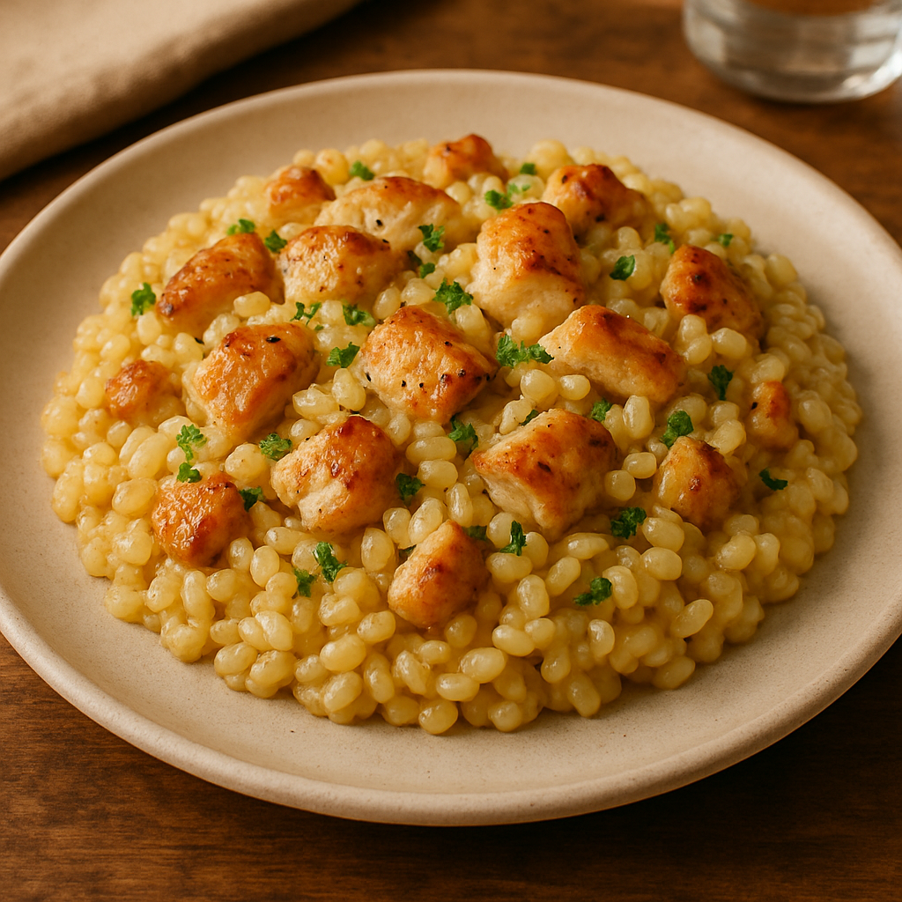

Home
Risotto With Chicken Recipe

Recipe Description
This is the best RISOTTO WITH CHICKEN RECIPE!
This recipe features classic Italian-inspired homemade creamy risotto made with sun-dried tomatoes and spinach, served with super flavorful chicken thighs.
Ingredients:
- Chicken
- Arborio rice
- Garlic
- White wine
- Chicken broth
- Parmesan cheese
- Sun-dried tomatoes
- Spices and seasoning
Steps:
- Season chicken with salt/pepper, sauté in pan until golden. Set aside.
- In same pan, melt butter, sauté onions until translucent (~3 mins).
- Add rice, toast for 2 mins until slightly translucent.
- Pour in wine (if using), stir until absorbed.
- Add hot stock one ladle at a time, stirring until absorbed before adding more.
- After 15 mins, return chicken to pan.
- When rice is al dente (total ~20 mins), stir in Parmesan and thyme.
- Serve immediately with extra Parmesan.